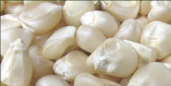

119


Food and Human Nutrition

Form Two
Bibliography
Abbey, P.M., & Macdonald, G.M. (1971). ‘O’ Level cookery. Singapore. McGraw- Hill Far Eastern Publishers (S) Ltd.
Abbey, P.M., & Macdonald, G.M. (1969). ‘O’ Level cookery. Great Britain. William
Clowes and Sons Limited.
Anazonwu, N.J. (1976). Food and nutrition in practice. London. Macmillan
Publishers Ltd.
Cartwright, D. & Robertson C. (1988). How to cook for your family. Singapore.
Longman Singapore Publishers Pte Ltd.
CESAC. (1989). Food and nutrition, Pupil’s text book. London. Macmillan
Publishers Ltd.
Ceserani, V. & Kinton, R. (1987). Practical cookery, 6th edition. United Kingdom.
Richard Clay Ltd.
Charley, H. (1982). Food science. USA. John Wiley & Sons, Inc.
Chege, J. & Kinuthia, D. (2003). Home science. Nairobi. East African Educational
Publishers Ltd.
Christine, G. (2019) The best way to reheat all your leftover. Retrieved from https://www.thekitchn.com/the-best-ways-to-reheat-leftovers-tips-from- thekitchn-219381. Accessed on March 25, 2025.
Danielle, E. (2021). Importance of meal planning. Retrieved from https:// projectmealplan.com/importance-of mealplanning/#:~:text=to%20Get%20
Started, What%20is%20meal%20 planning%3F,or%20plan%20for%20 your%20family. Accessed on march 17, 2025.

17/09/2025 16:30